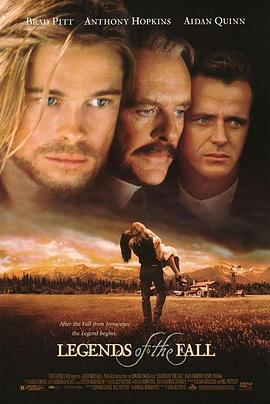

燃情岁月 / Legends of the Fall
又名：秋日传奇 / 真爱一世情(台) / Legends of the Autumn
前面16:00 Susan弹钢琴那一段虽然是引出下文的，但是隐约感觉到故事的悲壮。配乐已经听了一年多了，才来看的电影。不给五星的原因，是中间那一段没看明白，为什么要离家出走？还有就是有些因为文化差异导致的不能理解，但是大部分处理的都很不错，音乐一响潸然泪下~
作品信息
| 导演 | 爱德华·兹威克 |
| 编剧 | 威廉·D·威特利夫 / 吉姆·哈里森 / 苏珊·希利迪 |
| 主演 | 布拉德·皮特 / 安东尼·霍普金斯 / 艾丹·奎因 / 朱莉娅·奥蒙德 / 亨利·托马斯 / 卡琳娜·隆巴德 / 坦图·卡丁诺 / 高登·图托西斯 / 克里斯蒂娜·皮克勒斯 / 约翰·诺瓦克 / 肯尼斯·威尔什 / 尼格尔·本内特 / 基根·麦金托什 / 埃里克·约翰逊 / 兰德尔·斯莱文 / 大卫·卡耶 / 查尔斯·安德烈 / 肯·科齐格 / 温妮·孔 / 巴特熊 / 格雷格·福西特 / 加里·A·赫克 / 马修·罗伯特·凯利 |
| 类型 | 剧情 / 爱情 / 战争 / 西部 |
| 制片国家/地区 | 美国 |
| 语言 | 英语 / 科尼什语 |
| 上映日期 | 1994-12-16(美国) |
| 片长 | 133分钟 |
| IMDb | tt0110322 |
说过什么
2016-05-10 11:13:17
广播 · 看过
前面16:00 Susan弹钢琴那一段虽然是引出下文的，但是隐约感觉到故事的悲壮。配乐已经听了一年多了，才来看的电影。不给五星的原因，是中间那一段没看明白，为什么要离家出走？还有就是有些因为文化差异导致的不能理解，但是大部分处理的都很不错，音乐一响潸然泪下~
最后一次看到是 2026-08-01T11:06:31+10:00 · 豆瓣原页